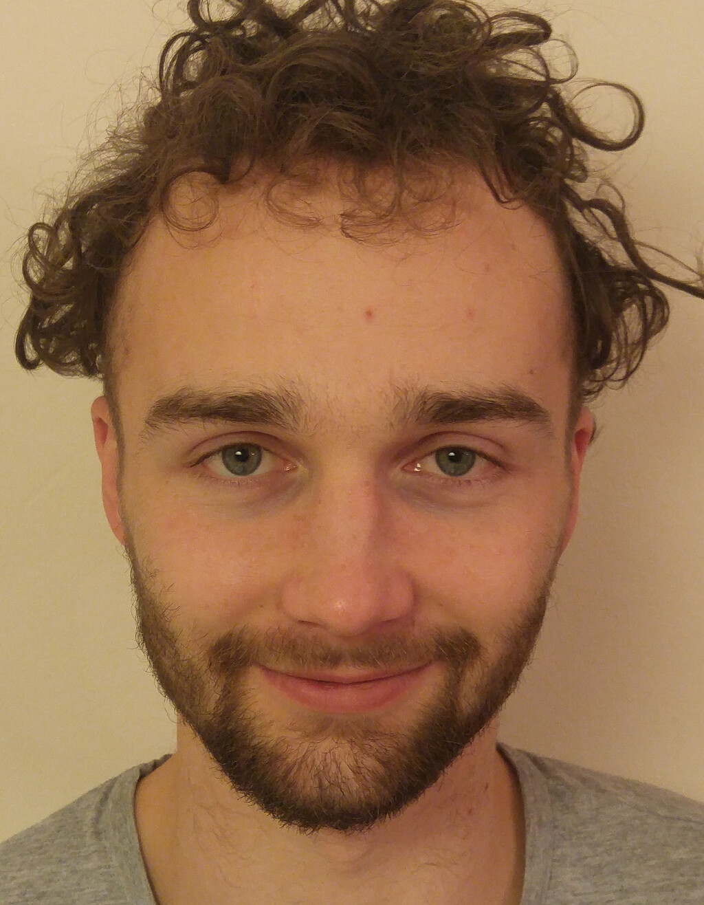

Referenzen, Herr Adam Brunnmeier

Berufserfahrung
Ingenieurbüro Karpuz, Mönchengladbach
2019-heuteWeiterentwicklen der Büro-Software zur Auftrags- und Rechnungsverwaltung.
Produktlink, aktuell in beta-Phase.
Therapeutisch-Pädagogisches Zentrum (TPZ 1-2) Villa Löwenherz, Dortmund
2018/2019Übernahme und Überarbeiten der
Webseite,
Sourcelink
Bildungsweg
Lehrstuhl für Informatik 8, RWTH Aachen
8.2019Masterarbeit: "Text Input System for a Sensitive Data Glove with Haptic Feedback" (
slides.pdf | thesis.pdf )
Lehrstuhl für Informatik 9, RWTH Aachen
8.2017 bis 9.2018Studentische Hilfskraft (12 h/w), Weiterentwickeln eines Spielframeworks, Programmieren
von Lernspielen (MTLG Spielframework,
Infodots Lernspiel)
Lehrstuhl für Informatik 5, RWTH Aachen
3.2017Bachelorarbeit: "Release PLEASE! Setting Up an Application Store based on an Agile Release
Methodology for Personal Learning Environments" ( slides.pdf |
thesis.pdf )
Lehrstuhl für Informatik 5, RWTH Aachen
4.2015 bis 3.2016Studentische Hilfskraft (12 h/w), Einscannen und Upload von anatomischen Modellen,
Programmieren der Webseite (Browser 3d-Viewer)
Privat
2019-heute Erstellen einer PC-Software zum Markieren und Zusammenfassen von Dokumenten, dafür auch
Gründen einer Firma mit einem Freund und Kollegen. Webseite, beta-Phase noch nicht
erreicht.
2018-heute Firmwareüberarbeitung des Datenhandschuhs der Firma
Cynteract, Erstellen einer Software zum Schreiben mit dem Handschuh.
2016-heute Leiten der Informatik-AG am Gymnasium Hückelhoven, Link.
Github Link
Stackoverflow Antworten